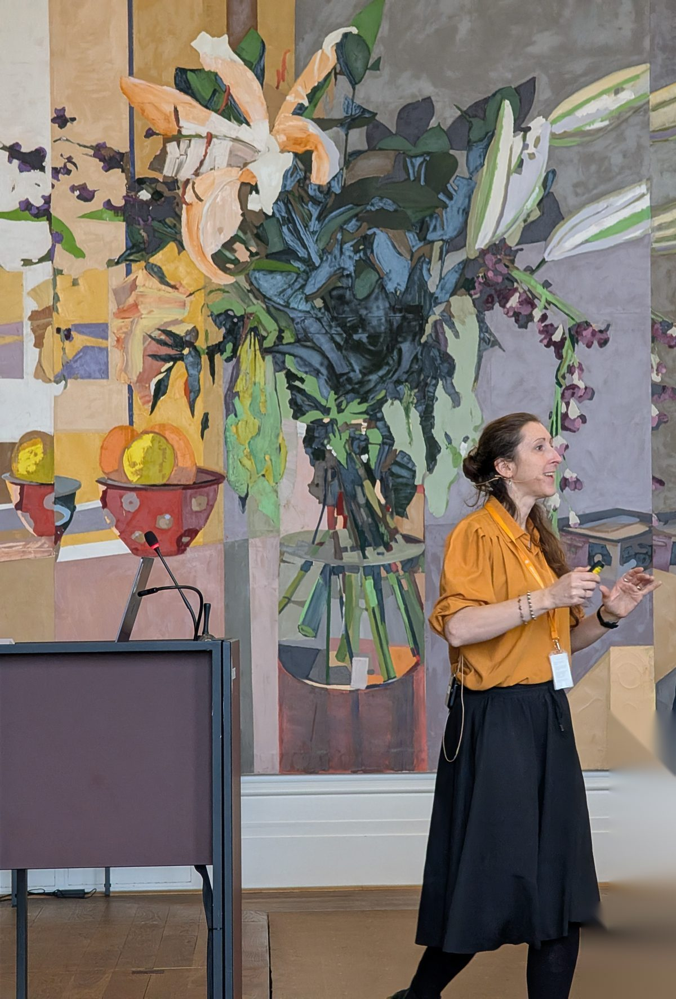

Adoption af kunstig intelligens og M365 Copilot for ledere og organisationer - med mennesket i centrum og med formål for øje.
Hvad er Mennesket med?
Gå fra tankeløs brug af det kunstige til intelligent brug af det mulige.
Mennesket med er en præventiv dannelsesøvelse til kritisk og aktiv stillingtagen - til kunstig intelligens, til adoptionen i din organisation og til hvordan værdien kan måles.
Tag stilling, før teknologien gør det for os
Hvordan sikrer du, at menneskene i din organisation forbliver aktivt tænkende, lærende og ansvarlige i mødet med ny teknologi?
Forstå
Hvordan fungerer kunstig intelligens?
Uden en grundlæggende forståelse kommer vi til at bruge det forkert - med konsekvenser til følge.
Sikre
Hvordan bevares medarbejderens motivation, mening og lærelyst?
Uden mening og lærelyst bliver forandringen noget, medarbejderne udsættes for - ikke noget, de tager del i.
Mål
Hvordan måler vi, om teknologien faktisk skaber værdi?
Uden en klar idé om målsætningen bliver kunstig intelligens målet i sig selv.
Hvad er effektiviteten værd, hvis der ikke lægges en strategi for, hvad tiden skal bruges til?
Læring
Tid til, at jeres medarbejdere bliver klogere. På deres fag, på hinanden og på den teknologi, de arbejder med.
Relationer
Tid til samtalen - med kollegaen, borgeren og kunden. Alt det mellem mennesker, som ingen teknologi kan eller bør overtage.
Heling
Tid til, at medarbejderne kommer sig over en hverdag, hvor forhastelse er blevet normen, og et hul i kalenderen føles som spildtid.
Hjælpe
Tid til at give en hånd med og lægge en skulder til - og til ørenlyd og hjerterum i jeres organisation.
Faglighed
Tid til, at jeres fagfolk fordyber sig i stedet for kun lige at nå det vigtigste.
Kvalitet
Tid til at gøre tingene ordentligt. Læse en ekstra gang, tænke en ekstra tanke og aflevere noget, man er stolt af - det mærkes også hos jeres kunder.
Innovation
Tid til at prøve noget af. De bedste idéer opstår sjældent i en fyldt kalender - de opstår, når I giver luft.
Refleksion
Tid til at stoppe op og spørge, om I er på vej det rigtige sted hen - og hvilken rolle I ønsker, teknologien skal spille.
Mennesket bag
Mit navn er Maja Lene Fries Harsberg.
Jeg hjælper mennesker og organisationer med at forstå, anvende og tage stilling til teknologi og kunstig intelligens - fra personlig produktivitet til organisatorisk forankring.
Jeg har en baggrund som cand.mag. i kultur, kommunikation og globalisering og har mere end 15 års erfaring med Microsoft-teknologi, projektledelse og organisatorisk forandring.
Det gør jeg gennem rådgivning, foredrag, workshops og adoptionsforløb med M365 Copilot og kunstig intelligens - altid med afsæt i jeres hverdag.
Mit arbejde begynder med mennesket.
